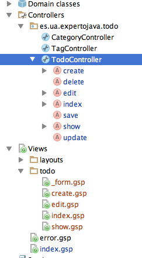

Framework Grails
Sesión 3: Introducción a Grails. Scaffolding.
Índice
- ¿Qué es Grails?
- Características de Grails
- Arquitectura
- Instalación de Grails
- Scaffolding
¿Qué es Grails?
- Framework para el desarrollo de aplicaciones web
- Basado en la plataforma Java
- Convención sobre configuración
- DRY (don´t repeat yourself)
- Patrón MVC
Patrón MVC
- Modelos: Clases de dominio
- Controlador: Gestiona peticiones a la aplicación y organiza los servicios proporcionados
- Vistas: GSP
Eficiencia
- Nos olvidamos de la parte de configuración
- Acortamos tiempo de desarrollo
- Nos centramos en funcionalidad y tests
Framework completo
- Grails no sólo es el entorno MVC
- Incluye gestor de base de datos
- Incluye contenedor web
- Incluye sistema de empaquetado de la aplicación
- Incluye sistema para la realización de tests
Empresas
- Netflix: http://www.netflix.com
- Sky: http://www.sky.com
- Secret Escapes: http://www.secretescapes.com
- Engage Sciences: http://www.engagesciences.com
- Odobo: http://www.odobo.com
Características
- Convención sobre configuración
- Tests: unitarios, integración y funcionales.
- Scaffolding
- Mapeo objeto-relacional: GORM
- Plugins
- Software de código abierto
Software de código abierto
- Groovy
- Framework Spring
- Hibernate
- SiteMesh
- Tomcat y Jetty
- H2
- Spock
- Gant
Arquitectura

Runtime
Instalación de Grails
- Juego de niños
- Línea de comandos
- IntelliJ IDEA
Instalación en línea de comandos
curl -s get.gvmtool.net | bash
gvm list grails
gvm install grails 2.4.4
gvm use grails 2.1.0
Instalación en IntelliJ IDEA

Seleccionar instalación gvm

Scaffolding
- Construcción automática de aplicaciones a partir del esquema de base de datos
- Generación de código
- CRUD (creación, lectura, actualización y borrado)
- Scaffolding dinámico
- Scaffolding estático
Aplicación ejemplo
- Creación y mantenimiento de tareas
- Tendremos categorías y etiquetas
- Relación uno a muchos entre categorías y tareas
- Relación muchos a muchos entre tareas y etiquetas
- No hay gestión de usuarios (por ahora)
Creación del proyecto Grails
grails help
grails create-app todo
Estructura del directorio
- grails-app/conf
- grails-app/controllers
- grails-app/domain
- grails-app/i18n
- grails-app/services
- grails-app/taglib
- grails-app/views
- grails-app/assets
- lib
- scripts
- src
- test
- web-app
Proyecto en IntelliJ IDEA

Ejecutar proyecto
grails run-app
Creación de clases de dominio
grails create-domain-class es.ua.expertojava.todo.todo
package es.ua.expertojava.todo
class Todo {
static constraints = {
}
}
Test unitario de la clase de dominio
package es.ua.expertojava.todo
import grails.test.mixin.TestFor
import spock.lang.Specification
/**
* See the API for {@link grails.test.mixin.domain.DomainClassUnitTestMixin} for usage instructions
*/
@TestFor(Todo)
class TodoSpec extends Specification {
def setup() {
}
def cleanup() {
}
void "test something"() {
}
}
Clase de dominio Todo
package es.ua.expertojava.todo
class Todo {
String title
String description
Date date
Date reminderDate
String url
static constraints = {
title(blank:false)
description(blank:true, nullable:true, maxSize:1000)
date(nullable:false)
reminderDate(nullable:true)
url(nullable:true, url:true)
}
String toString(){
title
}
}
A tener en cuenta
- No se ha definido una clave primaria
- Se añaden las propiedades id y version como clave primaria
- La propiedad version se utiliza para evitar inconsistencias de datos
- Constraints (restricciones)
Creación de controladores
grails create-controller es.ua.expertojava.todo.todo
package es.ua.expertojava.todo
class TodoController {
def index() { }
}
Scaffolding dinámico
Sustituimos
def index = {}
por...
def scaffold = Todo
o...
def scaffold = true
Aplicación

Vistas de scaffolding
- El formulario sigue el orden de las restricciones
- Description crea un textarea
- Si no se cumplen las restricciones, se muestra un error
Clase de dominio Category
package es.ua.expertojava.todo
class Category {
String name
String description
static hasMany = [todos:Todo]
static constraints = {
name(blank:false)
description(blank:true, nullable:true, maxSize:1000)
}
String toString(){
name
}
}
Clase de dominio Todo
package es.ua.expertojava.todo
class Todo {
String title
String description
Date date
Date reminderDate
String url
Category category
static constraints = {
title(blank:false)
description(blank:true, nullable:true, maxSize:1000)
date(nullable:false)
reminderDate(nullable:true)
url(nullable:true, url:true)
category(nullable:true)
}
String toString(){
"title"
}
}
Creación del controlador de Category
grails create-controller es.ua.expertojava.todo.category
package es.ua.expertojava.todo
class CategoryController {
def scaffold = Category
}
Clase de dominio Tag
package es.ua.expertojava.todo
class Tag {
String name
static hasMany = [todos:Todo]
static constraints = {
name(blank:false, nullable:true, unique:true)
}
String toString(){
name
}
}
Clase de dominio Todo
package es.ua.expertojava.todo
class Todo {
String title
String description
Date date
Date reminderDate
String url
Category category
static hasMany = [tags:Tag]
static belongsTo = [Tag]
static constraints = {
title(blank:false)
description(blank:true, nullable:true, maxSize:1000)
date(nullable:false)
reminderDate(nullable:true)
url(nullable:true, url:true)
category(nullable:true)
}
String toString(){
"title"
}
}
Creación del controlador de Tag
grails create-controller es.ua.expertojava.todo.tag
package es.ua.expertojava.todo
class TagController {
def scaffold = Tag
}
Inserción de datos
import es.ua.expertojava.todo.*
class BootStrap {
def init = { servletContext ->
def categoryHome = new Category(name:"Hogar").save()
def categoryJob = new Category(name:"Trabajo").save()
def tagEasy = new Tag(name:"Fácil").save()
def tagDifficult = new Tag(name:"Difícil").save()
def tagArt = new Tag(name:"Arte").save()
def tagRoutine = new Tag(name:"Routine").save()
def tagKitchen = new Tag(name:"Cocina").save()
def todoPaintKitchen = new Todo(title:"Pintar cocina", date:new Date()+1)
def todoCollectPost = new Todo(title:"Recoger correo postal", date:new Date()+2)
def todoBakeCake = new Todo(title:"Cocinar pastel", date:new Date()+4)
def todoWriteUnitTests = new Todo(title:"Escribir tests unitarios", date:new Date())
todoPaintKitchen.addToTags(tagDifficult)
todoPaintKitchen.addToTags(tagArt)
todoPaintKitchen.addToTags(tagKitchen)
todoPaintKitchen.category = categoryHome
todoPaintKitchen.save()
todoCollectPost.addToTags(tagRoutine)
todoCollectPost.category = categoryJob
todoCollectPost.save()
todoBakeCake.addToTags(tagEasy)
todoBakeCake.addToTags(tagKitchen)
todoBakeCake.category = categoryHome
todoBakeCake.save()
todoWriteUnitTests.addToTags(tagEasy)
todoWriteUnitTests.category = categoryJob
todoWriteUnitTests.save()
}
def destroy = { }
}
Scaffolding estático
- generate-controller
- generate-views
- generate-all
Scaffolding estático de Todo
grails generate-all es.ua.expertojava.todo.Todo
Controlador Todo

Scaffolding estático de Todo
grails generate-controller es.ua.expertojava.todo.Tag
grails generate-views es.ua.expertojava.todo.Tag